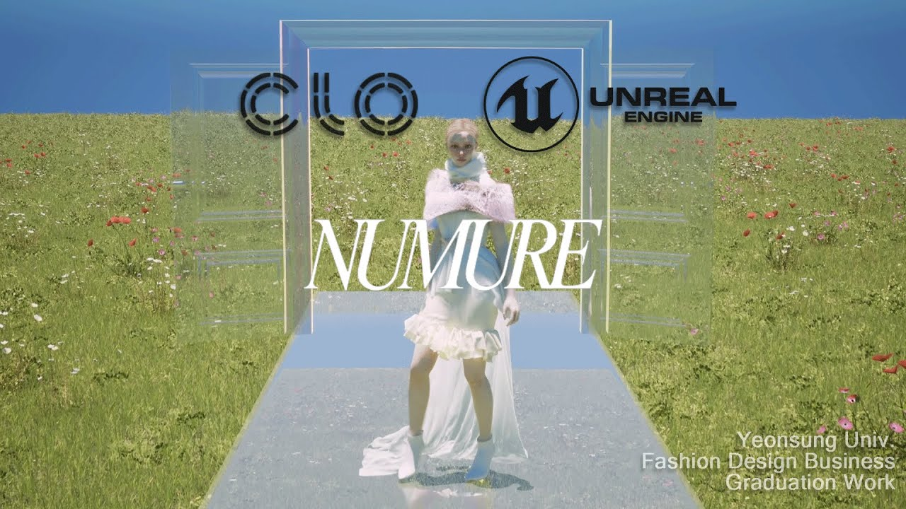

Virtual Fashion: CLO에서 가상 런웨이까지
2026.08.30
3D 의상이 실제 패션 산업, 디지털 런웨이, 패션 필름, 게임과 가상공간에서 어떻게 활용되는지 살펴보고 이번 수업의 CLO–Unreal 제작 방향을 정리합니다.
이번 수업에서는 CLO로 의상을 만드는 것에서 한 단계 더 나아가, 제작한 의상을 가상 공간에서 어떻게 보여줄 수 있는지 알아봅니다. 여러분은 이미 CLO의 기본적인 패턴 제작과 시뮬레이션을 배웠기 때문에 기능을 반복해서 배우기보다 ‘내가 만든 옷을 어떤 공간에서, 어떤 움직임과 카메라로 보여줄 것인가?’에 집중합니다. Unreal Engine은 수업 중반부부터 설치와 기본 인터페이스를 함께 진행합니다. 현재 단계에서는 언리얼 기능을 미리 공부할 필요가 없습니다. 먼저 자신이 제작할 의상과 그것을 어떤 이미지로 보여줄 것인지 정리하는 것이 중요합니다.
버츄얼 패션은 어디에 활용될까?
버츄얼 패션은 단순히 가상 캐릭터가 입는 옷이나 NFT만을 뜻하지 않습니다. 실물 제작 전 3D 샘플과 핏 검토, 컬러와 원단 비교, 디지털 쇼룸, 온라인 룩북, 패션 필름, 게임과 아바타 의상, AR 가상 착용 등 다양한 분야에서 사용됩니다. 핵심은 옷을 디지털로 만드는 것에서 끝나지 않습니다. 하나의 3D 의상 데이터를 디자인 검토, 이미지, 영상, 가상공간 등 여러 형태로 확장할 수 있다는 점이 중요합니다.
1. 실제 제품 개발에 사용되는 3D 의상
3D 의상은 화보나 홍보 이미지를 만드는 데만 사용되지 않습니다. 실제 패턴과 제품을 개발하는 과정에서도 물리 샘플을 만들기 전에 핏, 비율, 봉제선과 디자인을 확인하는 작업 데이터로 활용됩니다. CALIDA는 과거에는 실제 샘플이 완성될 때까지 패턴과 디자인선의 위치를 확인하기 어려웠지만, CLO 도입 후에는 패턴을 가져와 아바타에서 핏과 위치를 먼저 검토하고 있습니다. BARREL은 하나의 제품을 개발하기 위해 여러 물리 샘플을 만들던 과정에 3D를 도입해 불필요한 샘플 사용을 줄였다고 설명합니다. TYH Textile은 CLO에서 핏 테스트를 진행하고, 고객에게 제품을 제시할 때 CLO와 CLO-SET의 3D 턴테이블 영상을 활용합니다. 이 사례들은 기존 화보나 실제 의상을 화면에 배치한 디지털 콘텐츠가 아니라, 패턴으로 제작한 3D 의상을 제품 개발과 검토에 직접 사용한 경우입니다. 다만 3D를 사용한다고 해서 샘플과 시간이 자동으로 줄어드는 것은 아닙니다. 정확한 패턴, 아바타 치수, 원단 물성과 실제 생산 기준이 함께 연결되어야 합니다.
CLO 공식 사용자 사례 — CALIDA·BARREL·TYH Textile↗2. 가상 공간에서 진행되는 디지털 런웨이
디자이너 Gary James McQueen은 20벌의 디지털 의상을 제작하고 Unreal Engine을 이용해 패션 필름과 가상 쇼룸으로 표현했습니다. 제작에는 Marvelous Designer, Substance Painter, Unreal Engine 등이 사용됐습니다. 실제 런웨이와 달리 카메라를 의상의 위, 옆, 뒤쪽으로 자유롭게 이동시키거나 소재와 디테일에 가까이 접근할 수 있습니다. 현실에서 제작하기 어려운 공간과 소재 표현을 이용해 디자이너가 원하는 세계관을 의상과 함께 보여준 사례입니다.
Gary James McQueen — Guiding Light 디지털 패션쇼↗3. 패션과 게임·가상공간의 결합
Balenciaga는 Unreal Engine으로 제작한 게임 형식의 가상 경험 ‘Afterworld: The Age of Tomorrow’를 통해 Fall 2021 컬렉션을 공개했습니다. 일반적인 패션쇼 영상을 재생하는 대신 관객이 가상공간을 직접 이동하며 컬렉션을 경험하도록 만든 사례입니다. 이후 Fortnite와의 협업에서는 게임 캐릭터의 디지털 의상, 패션 포즈, 가상공간, 현실 광고와 3D 이미지를 연결했습니다. 이때 포즈는 단순히 캐릭터가 멋있게 서 있는 동작이 아니라 의상의 실루엣과 소재를 효과적으로 보여주기 위한 패션 연출의 일부가 됩니다.
Balenciaga — Afterworld와 Fortnite 사례↗4. 현실에서 촬영하기 어려운 패션 이미지
‘Neon Rapture’는 Iris van Herpen의 디자인을 가상인간, 모션 캡처, Unreal Engine의 가상 환경과 결합한 패션 단편 영화입니다. Unreal Engine은 가상공간의 사전 시각화, 조명과 카메라 테스트, 움직임과 장면 구성, 현실 카메라로 표현하기 어려운 시점 연출에 활용됐습니다. 버츄얼 패션의 목적이 항상 현실과 똑같은 이미지를 만드는 것은 아닙니다. 현실에서는 제작하거나 촬영하기 어려운 공간, 움직임, 소재의 변화를 이용해 새로운 패션 이미지를 만들 수도 있습니다.
Iris van Herpen — Neon Rapture 사례↗우리가 실제로 제작했던 디지털 런웨이
아래 영상은 연성대학교 패션디자인비즈니스과 학생들과 진행한 버츄얼 런웨이 졸업작품입니다. 이번 수업에서 제작할 결과물과 가장 가까운 사례이기도 합니다. 영상을 그대로 따라 만드는 것이 목적은 아닙니다. 같은 제작 구조를 이해한 뒤 각자 다른 의상과 표현 방향으로 발전시키는 것이 목표입니다.
StudioCats 포트폴리오에서 Emotional Shelter 보기↗StudioCats 포트폴리오에서 Unframed 보기↗영상을 볼 때는 다음 요소를 확인해 봅니다. • 의상의 실루엣이 잘 보이는가? • 워킹과 포즈가 의상을 가리지 않는가? • 공간이 의상의 콘셉트와 어울리는가? • 조명으로 소재와 주름이 잘 표현되는가? • 전신과 디테일을 보여주는 카메라가 적절히 사용됐는가? • 영상에서 가장 기억에 남는 장면은 무엇인가?
이번 수업에서 진행할 흐름
레퍼런스 조사 → 의상 콘셉트 결정 → CLO 의상 제작 및 수정 → 소재·컬러·그래픽 적용 → 포즈 또는 워킹 준비 → LiveSync로 Unreal Engine 연결 → 공간·조명·카메라 구성 → 패션 화보 또는 런웨이 영상 렌더링 CLO에서는 옷의 구조와 실루엣을 설계하고, Unreal Engine에서는 그 옷이 보이는 공간과 상황을 설계합니다. LiveSync는 CLO에서 제작한 의상, 아바타, 애니메이션을 Unreal Engine으로 연결하는 역할을 합니다.
CLO LiveSync 공식 소개↗최종 결과물은 두 방향으로 완성할 수 있습니다
디지털 런웨이는 모델의 워킹과 포즈, 전신과 디테일 카메라, 조명과 가상 런웨이 공간을 이용해 짧은 패션 영상으로 완성합니다. 버츄얼 패션 화보는 정지 포즈, 전신·측면·후면 이미지, 소재와 디테일 클로즈업, 공간과 조명을 이용해 에디토리얼 이미지 시리즈로 완성합니다. 화보는 런웨이를 완성하지 못했을 때 선택하는 낮은 단계의 결과물이 아닙니다. 움직임 대신 포즈, 조명, 카메라 구도에 집중하는 별도의 표현 방식입니다.
참고 — MetaHuman Fashion Starter Kit의 Runway와 Turntable 구성↗MetaHuman은 왜 참고 사례로만 소개할까?
MetaHuman을 사용하면 사실적인 인물, 피부와 얼굴 표현을 이용해 가장 리얼하고 높은 품질의 패션 화보와 런웨이 영상을 제작할 수 있습니다. MetaHuman Fashion Starter Kit 역시 Runway와 Turntable 장면을 이용해 의상을 고품질로 보여주는 좋은 예입니다. 하지만 MetaHuman을 실제 수업 결과물에 사용하려면 MetaHuman 생성과 설정, 체형에 맞춘 의상 피팅, 캐릭터와 의상의 연결, 애니메이션 적용과 리타기팅을 추가로 배워야 합니다. Unreal Engine의 Sequencer에서도 단순한 카메라 편집을 넘어 모션 배치, 애니메이션 전환, 캐릭터 컨트롤을 훨씬 깊게 다뤄야 합니다. 이번 과정은 한 학기 안에 CLO 의상 제작부터 Unreal Engine 장면 구성과 최종 렌더링까지 완성해야 하는 짧은 수업입니다. MetaHuman 과정까지 포함하면 의상 디자인과 결과물 완성에 사용할 시간이 부족해지기 때문에, 이번 학기에는 MetaHuman 제작을 필수 교습 범위에서 제외합니다. 실습에서는 CLO 아바타에 CLO 기본 모션 또는 Mixamo 기반 모션을 적용하고, CLO LiveSync를 이용해 의상·아바타·애니메이션을 Unreal Engine으로 연결합니다. 이를 통해 복잡한 MetaHuman 파이프라인을 추가하지 않고도 공간, 조명, 카메라와 런웨이 연출에 집중해 한 학기 안에 완성된 결과물을 만드는 것을 목표로 합니다. MetaHuman은 이번 수업 이후 더 높은 사실성과 품질을 원하는 학생이 확장해서 학습할 수 있는 다음 단계입니다.
레퍼런스를 볼 때 체크할 것
예쁜 의상 이미지만 모으지 않습니다. 만들고 싶은 의상의 실루엣, 소재의 두께와 광택과 주름, 의상을 보여줄 공간, 모델의 포즈 또는 움직임, 조명의 방향과 색, 카메라의 높이와 거리, 전체 이미지의 분위기를 함께 찾아야 합니다. ‘이 이미지에서 가져오고 싶은 핵심은 무엇인가?’, ‘그 요소를 내 의상에서는 어떻게 활용할 것인가?’, ‘그대로 복제하지 않고 무엇을 바꿀 것인가?’를 설명할 수 있도록 레퍼런스를 정리합니다.
이번 수업의 핵심
복잡한 패턴이나 어려운 Unreal 기능을 많이 사용하는 것이 목표는 아닙니다. 1. 어떤 의상을 만들고 싶은지 분명하게 결정하기 2. 의상의 특징을 보여줄 공간과 표현 방식을 선택하기 3. 처음 세운 콘셉트를 이미지 또는 영상으로 끝까지 완성하기 좋은 3D 의상만으로 좋은 패션 이미지가 완성되지는 않습니다. 의상을 어떻게 보여줄 것인지까지가 이번 수업의 디자인입니다.